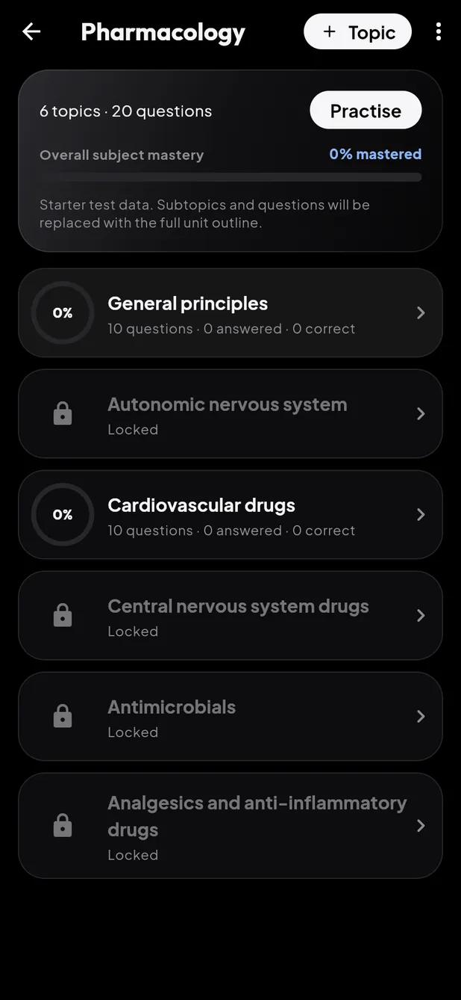
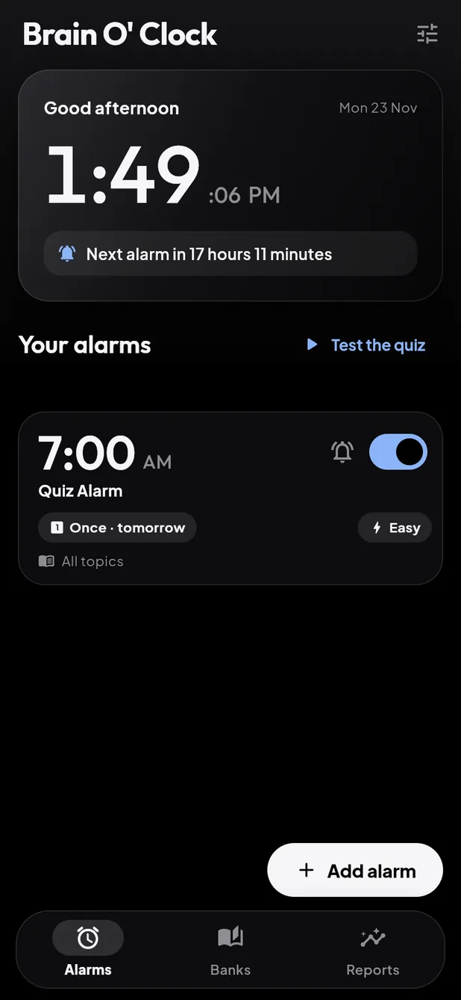
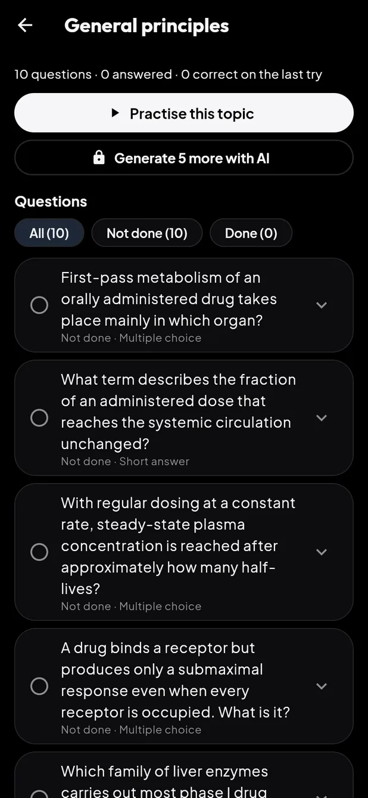

No account
Free
- Up to 3 alarms
- Two starter topics, 10 questions each
- Your overall accuracy
Android app for medical students
Brain O' Clock keeps ringing until you answer revision questions correctly. No off button. No easy snooze. You are up, and your first questions of the day are already done.
Free to start. Your first three alarms need no account.
Questions from the app's own question bank.
Choose the time, the days, and what you want to be asked: one topic, a whole unit, or everything. Then choose how hard it is to switch off: two right in a row, three, five, or up to fifteen.
Five minutes before, the phone vibrates three times with a "Skip this alarm" button. Awake already? Skip it. Otherwise it rings.
The quiz opens over your lock screen at alarm volume. The volume keys do nothing.
Multiple choice has five options. Typed answers forgive small spelling mistakes,
so paracetemol
still counts, but COX-2
is never accepted for COX-1
.
A wrong answer shows you the right one and why, then resets your streak. Snooze exists, but only as mercy: it unlocks after five wrong in a row.
Every answer is kept. Reports show your accuracy and the topics you keep missing, and one tap turns a weak topic into a practice session.



Three alarms and the starter topics cost nothing. Pro opens the whole question bank, the AI tutor and your full stats. Pay with M-Pesa or card, right in the app.
Free
Free
KES 100 a month
KES 150 a month
Your phone will ask a few questions while installing. The steps are just below.
It takes about two minutes. Android is careful with apps that do not come from the Play Store, so you will see up to three warnings. Here is what each one means and what to tap.
Tap Download above. Your browser may say File might be harmful
or
This type of file can harm your device
. It says that for every app file, whoever made it.
Tap Download anyway (or Keep).
Tap the "download complete" notification, or open your Downloads folder and tap
the file whose name starts with brain-o-clock.
The first time, you will see For your security, your phone is not allowed to install unknown apps
from this source
. Tap Settings, switch on Allow from this source, then go back
and tap Install. You can switch it off again afterwards.
Play Protect may say it does not recognise the app, or offer to scan it. If you see Scan app, tap it and let it finish. Then tap More details and Install anyway. This appears because the app is new, not because something was found.
An alarm app needs permission to ring: notifications, alarms and reminders, and showing over the lock screen. If anything is missing, the app shows a banner on its first screen with a button to fix it.
Tecno, Infinix, Itel, Xiaomi, Oppo, Vivo, Huawei: these phones close apps to save battery. When the app asks, allow autostart and set battery use to Unrestricted, or alarms can be missed.
When a new version is out, the app tells you. Come back to this page, download, and install it over the old one. Your alarms, answers and settings stay. You do not need to uninstall first.
The volume keys do not work while it rings. Switching the phone off does stop it; nothing can prevent that. The app is there to help you keep a promise to yourself, not to trap you.
After five wrong answers in a row, snooze unlocks. A snoozed alarm cannot simply be switched off afterwards, so it comes back. An alarm nobody touches stops by itself after ten minutes and is recorded as missed.
Not to ring, and not for the questions already on your phone. Signing in, syncing your progress, paying and the AI tutor need it.
The built-in question bank is for medical school. You can add your own topics and questions on anything, and on a paid plan the AI can write questions for a topic you describe.
Not yet. Android only for now.
In the app: Settings, General, Report an alarm problem. It sends us what happened with the technical details attached. Or reach us directly below.
Email or WhatsApp us and we will sort it out.